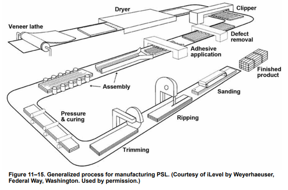

Structural Composite Lumber is a manufactured wood product used in building construction. Whereas normal lumber is made from boards cut directly from logs, structural composite lumber is made from thin strips or strands of lumber1 which are then glued together. Unlike normal lumber, which is limited by the dimensions of the tree it came from, SCL can be fabricated in any size, shape or length.
Common types of SCL would be LVL (laminated veneer lumber), LSL (laminated strand lumber), and PSL (parallel strand lumber).

Below are some miscellaneous notes about Structural Composite Lumber.
From Wood as an Engineering Material:
Normal lumber is a non-uniform material, and its strength is often limited by knots or other defects. In SCL these defects are distributed uniformly throughout the section:
…In contrast with sawn lumber, the strength-reducing characteristics of SCL are dispersed within the veneer or strands and have much less effect on strength properties. Thus, relatively high design values can be assigned to strength properties for both LVL and PSL. Whereas both LSL and OSL have somewhat lower design values, they have the advantage of being produced from a raw material that need not be in a log size large enough for peeling into veneer.
…Veneer for the manufacture of LVL must be carefully selected for the product to achieve the desired engineering properties. Veneers are often sorted using ultrasonic testing to ensure that the finished product will have the desired engineering properties.
…Sheets of LVL are commonly produced in 0.6- to 1.2-m (2- to 4-ft) widths in a thickness of 38 mm (1.5 in.). Continuous presses can be used to form a potentially endless sheet, which is cut to the desired length2>.
From Structural Properties of Laminated Douglas Fir/Epoxy Composite Material:
On the limitations of normal lumber:
The most extensive efforts at optimizing the use of wood in large dynamic structures have been in building ships. Two thousand years of evolutionary shipbuilding technology reached its zenith in the 16th century with ships capable of supporting the great voyages of exploration. The fundamentals of shipbuilding technology of this era were sound enough that only small improvements were made over the next 300 to 400 years. Essentially the same materials and construction methods were still used in the great clipper ships of the 19th century.
Up to this point the long evolution of wood technology had focused upon “the weak link”–the capability of the joint between individual wood pieces. Wooden ships were built of thousands of wood parts that all needed to be joined together with the manufacturing capability then available. The evolution of shipbuilding essentially relied upon improvements in joint technology, which allowed larger and larger ships to be built. However, these ships were far heavier than they needed to be because only a small fraction of the true structural potential of wood could be used with the existing types of joints.
With the arrival of manned flight lightweight structural capability became paramount for the success of aviation. At this point the true limitations of past wood technologies were addressed. For the first 30 years of the development of the airplane, wood was the primary structural material. Pressures to develop safe, reliable, lightweight structures fueled research and development efforts that, for the first time, began to scientifically characterize wood properties. Aircraft engineers quickly realized that even the best mechanically fastened wood joints could transfer only a little over 30 percent of downstream wood material capability. Thus, the full material capability of wood had rarely been utilized in any of the dynamic wood structures of the past.
Because of the limitations of early adhesives, bonded wood joint technology did not become fully viable until the mid 1930’s, when more advanced adhesives became available. This late development, combined with a lack of uniform, consistent wood physical properties that could be relied upon in a quality control effort, limited the use of wood in the then rapidly developing aircraft industry.
Metals quickly gained favor as a safer material for most larger and faster aircraft. Metals not only possessed more consistent properties but could be fabricated with a high degree of reliability by a semiskilled work force. In comparison, woodworking required a high degree of skill that took a long apprenticeship to acquire.
Major pioneering efforts in wood technology ended at the close of World War II. One reason was that aluminum alloy technology evolved quickly in response to the needs of modern aircraft. This was compounded by wood’s past image, traditions, limitations, and folklore. However, the main reason wood lost favor was related to maintenance. Lack of a viable moisture protection system for a completed structure was at the heart of the problem. All wooden structures need some reasonable moisture stability to prevent internal stressing and fungus attack. The old wood technology of ships had evolved to the point where it could successfully deal with large changes in wood moisture content, but the rot problem was never solved. Although the development of all-bonded joints solved the major structural limitation of wood construction, moisturerelated problems persisted. By 1945, moisture problems were perceived by the aircraft engineering community as a fundamental unresolved dilemma that severely limited wood as a viable engineering material for high-performance dynamic structures. Another major drawback was the lack of adequate quality controls that could be implemented in large-scale manufacturing efforts with mass production.
Wood as a living organism remains at a relatively constant moisture level during its entire lifetime until it is harvested. The real problem with wood begins after it is cut, when its moisture level is rather quickly influenced by short-term changes in local weather conditions. Unprotected wood may undergo many moisture changes in a short time, and the repeated expansion and contraction of the wood under these conditions is thought to be the leading cause of premature wood aging. Wood over 3000 years old has been taken out of the tombs of Egypt. Because of the constant temperature and humidity in which it was stored, the wood was found to have lost none of the physical properties typical of its species. This sponge-like capacity to take on and give off moisture at the whim of the surrounding environment is the root cause of nearly all of the problems with wood. Specifically, varying moisture levels in wood are responsible for dimensional instability, internal stressing that can lead to checking and cracking, potential loss of strength and sifttness, and decay due to dry rot.
Dimensional instability has always been a factor limiting the use of wood in many engineering applications where reasonable tolerances on size must be maintained. To complicate matters, the dimensional instability of wood has never been constant. It varies widely between species of wood and depends strongly on how the wood is cut from the tree. Referring to figure 5, radial-grain wood (cut perpendicular to annual rings) in most species is more stable than is tangential-grain wood (cut parallel to annual rings). The dimensional change of wood due to moisture changes always occurs on outer surfaces first, caused by differing moisture levels within the same piece of wood. This can lead to internal stressing that often causes surface checking and cracking.